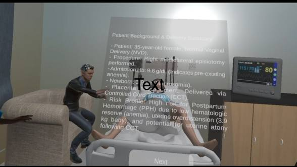

Enhancing PPH Training for Medical Students
A human-centred VR simulation that pairs clinical decision-making with procedural training to help Year 4 medical students respond to Postpartum Hemorrhage (PPH) confidently.
Meet the Team
Project Supervisor: Dr. Khoo Eng Tat | Clinical Advisor: Dr. Arundhati Gosavi, NUH | 3D Artist: Mr Lim Xi Da
Acknowledgements
We would like to extend our heartfelt gratitude to everyone who has contributed to our project in one way or another. Your support has been invaluable in ensuring its smooth progress, and we could not have accomplished this without you.
Special gratitude goes to our Project Supervisor, Dr. Khoo Eng Tat, for his constant encouragement, weekly coordination, and stimulating suggestions that helped shape our project. We are equally indebted to our Clinical Advisor, Dr. Arundhati Gosavi from the National University Hospital (NUH), whose indispensable medical expertise and practical advice were vital in ensuring the accuracy of our simulation.
We extend our sincere thanks to our 3D Artist, Mr. Lim Xi Da, for his help in designing specific 3D assets used in our virtual environment, and to our Lab Technician, Matthew, for his invaluable technical help and setup advice. Our heartfelt thanks also go to Liu Chang for her immense support and Cheng Haojie for his valuable technical assistance and suggestions. Finally, we are deeply grateful to all the participants who generously gave their time to take part in our user studies.
Introduction
1.1 Problem Statement & Background
Postpartum Hemorrhage (PPH) is one of the most critical obstetric emergencies in modern medicine, defined as blood loss exceeding 500 mL following a vaginal delivery or 1,000 mL following a caesarean section. It remains the leading cause of maternal mortality worldwide, accounting for approximately 27% of all maternal deaths globally — roughly 14 million cases and 70,000 deaths annually (Say et al., 2014; WHO, 2023). The condition can deteriorate rapidly, with patients losing upwards of 1,000 mL of blood before displaying visible signs of haemodynamic instability, leaving clinicians with an extremely narrow window for effective intervention (Rath, 2021).
In Singapore, while maternal mortality rates are significantly lower than global averages, PPH remains a leading cause of maternal morbidity, with severe cases resulting in ICU admissions, emergency hysterectomies, and long-term psychological trauma (Chauke et al., 2023).
Despite its clinical significance, the "high-acuity, low-frequency" nature of PPH means that medical students in Singapore rarely have the opportunity to engage actively in its management during clinical rotations. Because these events are life-threatening and demand immediate senior-level intervention, students are ethically and practically relegated to the role of passive observers.
Current training modalities — primarily didactic lectures and scheduled manikin-based simulations — fail to bridge this gap effectively. Manikin-based simulations are limited by high cost, resource intensity, and logistical complexity, meaning students often receive only one or two practice opportunities per academic year. Traditional group simulations also suffer from the "observer effect," where only one student takes the lead while peers watch passively, resulting in inconsistent skill acquisition across the cohort.
Without sufficient hands-on exposure, students enter their housemanship with theoretical confidence but practical hesitation. There is therefore an urgent need for a training solution that provides a high-fidelity, risk-free environment where students can develop the procedural competence and clinical reflexes required to manage a postpartum hemorrhage effectively.
1.2 Novelty and Value Proposition
This project proposes the development of a Virtual Reality (VR) simulation specifically designed for PPH management training. Built on the Meta Quest 3 headset and developed in Unity, the simulation places the learner inside a virtual NUH labor ward where they must independently manage a deteriorating postpartum patient through a structured sequence of clinical interventions.
The Meta Quest 3 is portable and standalone, allowing a student to engage in a high-intensity PPH drill multiple times in a single session without any additional infrastructure — enabling the high-frequency repetition of procedural sequences until actions become reflexive, functioning as a "flight simulator" for obstetric emergencies (Ericsson, 2004).
By concentrating development efforts on procedural accuracy and sequential clinical workflow, this simulation provides a robust and scalable bridge between theoretical classroom knowledge and the high-stakes reality of the delivery suite.
1.3 Scope Refinement following Interim Assessment
Following the interim project presentation and subsequent consultations with clinical stakeholders, the scope was significantly refined. The original proposal encompassed elements of environmental realism, empathy training, and voice recognition technology. While these held strong pedagogical value, integrating voice recognition and empathy-driven interactions would have required substantial additional development infrastructure that fell outside the realistic scope of the project.
The decision was made to narrow the focus to what was most clinically essential and technically achievable: guiding the learner through a structured, sequential management protocol for PPH. This refinement ultimately produced a more focused and stable training tool, prioritising procedural competence and clinical sequencing as the foundation upon which more advanced features can be built in future iterations.
Design Strategy
2.1 Identified Training Gaps
Through literature review and consultations with Dr. Arundhati Gosavi at NUH, we identified two primary deficiencies in current PPH training:
- Cognitive Load Management: In a real PPH scenario, students must simultaneously assess deteriorating vital signs, recall drug dosages, and perform manual interventions under intense time pressure. Dr. Arundhati Gosavi confirmed that cognitive freezing is commonly observed in junior doctors encountering their first obstetric emergency.
- Motor Skill Development: Tasks such as establishing IV access, performing uterine massage, and sequencing uterotonic administration require physical familiarity and muscle memory that can only be built through repeated hands-on practice.
With formal PPH training occurring only twice a year, students simply do not receive enough exposure for procedural confidence to become reflexive.
2.2 Subject Matter Research
The development of this VR training module was an iterative process driven by continuous professional oversight and evidence-based medical research.
2.2.1 Doctor Consultations
The primary clinical advisor is Dr. Arundhati Gosavi from NUH. Our team engaged in a consistent consultation schedule, initially meeting on a weekly and biweekly basis, and later transitioning to monthly sessions. Dr. Arundhati provided a specialised PPH textbook as the primary medical reference, and these expert sessions highlighted that while medical students are often proficient in theoretical management protocols, they lack experiential exposure to manage a rapidly deteriorating patient.


Figures 1, 2 & 3: Resources from specialised PPH textbook — features/causes of PPH, immediate management flowchart, and blood loss estimation guide.
2.2.2 Clinical Workflow and Scenario Logic
The clinical workflow is structured to guide the learner through a realistic progression of PPH management, transitioning from routine postpartum monitoring to active crisis response. Pre-existing risk factors such as maternal anaemia, delivery of a macrosomic baby, and the use of controlled cord traction are embedded into the patient profile.
Once hemorrhage is initiated, the workflow follows a structured sequence: recognition of bleeding, vital sign assessment, IV access, blood investigations, and uterotonic administration. Each stage must be completed before the next can be unlocked, reinforcing systematic and prioritised care.

Figure 4: PPH Management Flow Chart
2.3 Design Requirements / Specifications
| Category | Specification | Requirement | Unit of Evaluation |
|---|---|---|---|
| Functional | Interactive tool support | Users can select and interact with clinical tools via intuitive controls | Task completion rate ≥ 90% |
| Sequential task flow enforcement | System enforces correct procedural order; out-of-sequence actions are blocked with feedback | 0 allowable sequence violations | |
| Dynamic patient response | Vital signs and bleeding severity indicators update within 2 seconds of user action | Response latency ≤ 2 seconds | |
| Scenario progression | Simulation supports at least 3 scenario stages with distinct clinical states | ≥ 3 stages per scenario | |
| Usability | Interface intuitiveness | First-time users can navigate core tasks without external instruction | ≥ 80% task success rate on first attempt |
| Cognitive load management | Instructions limited to ≤ 2 sentences per prompt; no more than 3 concurrent on-screen prompts | ≤ 3 simultaneous on-screen cues | |
| Error recovery | Users can retry incorrect steps without simulation restart; maximum 3 retry attempts per task | ≤ 3 retry attempts per step | |
| User satisfaction | Post-session usability rating assessed via SUS | SUS score ≥ 70 / 100 | |
| Educational | Learning objective coverage | Simulation addresses ≥ 5 core PPH management competencies | ≥ 5 competencies assessed |
| Active participation | Learner must complete ≥ 80% of interactive decision points to progress | ≥ 80% participation rate | |
| Progressive difficulty / scaffolding | Early stages provide ≥ 3 guided prompts; later stages reduce prompts to ≤ 1 per task | Prompt reduction across ≥ 2 difficulty levels | |
| Error-based learning | Incorrect actions trigger explanatory feedback with clinical rationale before allowing retry | 100% of errors include rationale feedback | |
| Technical | System performance / latency | Simulation renders at stable frame rate with no perceptible lag during interactions | Frame rate ≥ 72 fps; latency ≤ 100 ms |
| Visual realism | Clinical environment and instruments modelled with sufficient detail to be identifiable by clinical staff | ≥ 85% object recognition accuracy | |
| System stability | No critical crashes or freezes during a full simulation session | 0 critical failures per session |
Table 1: Design Requirements for VR-based PPH simulation
2.4 Development Process and Storyboarding
The development followed a structured, iterative design cycle that transitioned from identifying human-centric problems to engineering a high-fidelity clinical solution.
Phase 1: Persona Development and Problem Scaffolding
The initial stage focused on the creation of "John," a representative Year 4 medical student persona. Through this persona, we identified that while a student may possess the requisite theoretical knowledge, they often lack the psychological preparedness and "clinical courage" required to lead an active PPH resuscitation. The persona-driven research highlighted that the VR system needed to prioritise a sense of responsibility and procedural flow.


Figures 5, 6 & 7: User persona storyboard illustrating the learning gap faced by medical students in PPH management.
Phase 2: Narrative Storyboarding and Clinical Logic
The development shifted toward a detailed technical storyboard, translating established medical protocols into a narrative flow of five distinct scenes — each with a specific "Clinical Trigger" and corresponding "Required Action." Visual storyboard mockups were presented to our project supervisor and clinical advisor Dr. Arundhati during consultation sessions, aligning on the user interface, feedback mechanisms, and logical progression before committing to Unity development.
Phase 3: Integration of Active Learning and Quiz Logic
We integrated interactive "Knowledge Checks" and "Clinical Reasoning" pop-ups at critical decision points to bridge the gap between action and theory. In the Scenario Introduction, the system pauses to ask: "Is this patient at high risk for PPH?" based on the provided admission Hb of 9.6 g/dL and newborn weight of 3.9 kg — forcing the learner to actively synthesise patient data.

Figure 8: Active Learning Interface and Patient Data Summary within the VR Environment.
Phase 4: Expert Refinement and Technical Validation
The transition from storyboard to Unity development was finalised through a rigorous validation session with clinical experts. Critical refinements included the precise routes and dosages for uterotonics — ensuring Misoprostol is administered per rectum (PR) and Carboprost via intramuscular (IM) injection in the thigh — making the simulation a technically accurate medical trainer.


Figures 9 & 10: Screenshots of Dr Arundhati providing medical expert opinion.
VR System Development
3.1 System Architecture & Technical Overview
The system architecture is designed as a modular, event-driven framework optimised for high-fidelity clinical training on the Meta Quest 3 headset. The architecture has three primary layers: the Hardware/Driver Layer, the Middleware/SDK Layer, and the Application Logic Layer.
At the Hardware Layer, the system utilises the Quest 3's advanced sensors for 6 Degrees-of-Freedom (6-DoF) tracking and high-resolution passthrough, communicating via the OpenXR standard. The Meta XR Core SDK and Interaction SDK translate raw sensor data into actionable "Interactors," processing complex hand-tracking data such as "pinch" and "poke" gestures and mapping them to virtual medical instruments with sub-millimeter precision.
The Application Logic Layer is governed by a Centralised State Machine, implemented via the ButtonSequencer class using C# Asynchronous Coroutines. This handles time-dependent clinical events — such as the 10-second spreading of the StainedSheet or the staggered activation of NurseAudio — without freezing the main execution thread, creating a "living" medical environment where vitals and visual cues change dynamically based on the user's progress.
A critical component is the Interaction Wrapper and Event System. By employing the PointableUnityEventWrapper, the system decouples the physical interaction from the logic. When a user interacts with a Syringe, the architecture queries a Validation Layer (the TrayItemChecker) that compares the user's action against a predefined procedural array. If the interaction matches the expected clinical step, the global state is updated; if not, it triggers a visual "Glow" feedback loop via the GlowObjectCmd system.
Data flow is optimised for the mobile chipset of the Quest 3 using the Vulkan Graphics API, maintaining a high frame rate (72Hz+) even while managing multiple concurrent scripts, 3D audio spatialisation, and dynamic lighting.
3.2 Unity Development & Toolkit Setup
| Category | Component / Tool | Technical Implementation & Clinical Purpose |
|---|---|---|
| Tools & Environment | Unity 2022.3 LTS | Selected for long-term stability and compatibility with Meta Quest 3. Utilises the Universal Render Pipeline (URP) to balance visual fidelity with mobile VR performance. |
| Meta XR All-in-One SDK | Serves as the primary technical foundation for hardware tracking, passthrough, and core interaction utilities. | |
| Custom C# Toolkit | TrayItemChecker.cs | Procedural Logic Engine that synchronises visual highlights on the medical trolley with instructional audio via audioManager.GetClipTime(). |
| SyringeCollisionPopup.cs | Spatial UI Bridge that uses a targetTag system to trigger context-sensitive instructions at the exact physical point of patient contact. | |
| ButtonSequencer.cs | Event Controller that manages scenario transitions, heart rate audio shifts, and the StainSpreader blood growth logic using asynchronous coroutines. | |
| VR Integration (Hand Tracking) | Meta Interaction SDK | Deployed via OVRInteractionComprehensive to prioritise Hand Tracking, simulating the manual dexterity required in an obstetric ward. |
| Plane Surface Logic | Defines physical interaction boundaries for the StainedSheet and UI; the Z-axis orientation calculates "Push" depth to build muscle memory. | |
| Hand Grab Poses | Maps real-time joint data via OVRHand to ensure medical instruments are held with realistic hand geometry. | |
| Performance (Vulkan API) | Multiview Rendering | Exclusive use of Vulkan API to unlock Quest 3 GPU power, reducing CPU overhead to maintain a consistent 72Hz frame rate. |
| ASTC 6x6 Compression | Optimises texture memory footprint for hospital assets and blood-stain visuals on the headset's VRAM. | |
| Shader Prewarming | Uses a Shader Variant Collection to pre-load transparency and glow shaders, preventing runtime frame drops during emergency triggers. | |
| Build & Pipeline | Android ARM64 (IL2CPP) | Translates C# into optimised C++ code, essential for running complex physics checks in OnTriggerEnter functions. |
| New Input System | Strictly configured to resolve conflicts between legacy Unity input and modern Meta XR requirements. | |
| Project Setup Tool | Final diagnostic gate to verify Android Manifest and OpenXR Feature Groups are correctly aligned with the hardware capabilities. |
Table 2: Unity Development Environment and Technical Toolkit
3.3 VR Scenario Design
The VR scenario is meticulously structured into five chronological stages that mirror the high-stakes environment of a delivery ward. Each scene moves the learner from passive observation to active clinical intervention.
Scene 0: Scenario Introduction (Context)
The simulation commences in a calm environment. The learner is introduced to a 35-year-old female who has just completed a normal vaginal delivery. The primary goal is to test the student's ability to identify "red flags" before they escalate.
The Quiz Trigger: A pop-up asks the student to identify if the patient is at high risk for PPH, based on an Hb of 9.6 g/dL (indicating anemia) and a newborn weight of 3.9 kg (macrosomia). By forcing the student to acknowledge these factors through a "Yes/No" submission, the simulation primes them to "act fast" once the bleeding begins.

Figure 11: Scene 0 interactive quiz prompt assessing learner identification of PPH risk factors.
Scene 1: Emergency Recognition (Sensory Triggering)
The simulation shifts from data review to crisis recognition. The transition is triggered by an auditory alert from the midwife: "Doctor, she's soaked two sheets already!" accompanied by the visual rendering of blood spreading on the delivery bed.
The Task: The student must perform a Visual Estimation of Blood Loss (VEBL). A multiple-choice prompt asks the learner to estimate the volume. Selecting 800ml/1000ml is the only way to progress, reinforcing the clinical standard that any loss over 500ml constitutes an emergency.

Figure 12: Scene 1 interactive quiz prompt assessing learner visual estimation of blood loss.
Scene 2: Medical Intervention (Intravenous Access)
The student must interact with the medical trolley to select the appropriate IV equipment for fluid resuscitation.
The Quiz Trigger: "Which size of IV cannula is most appropriate for a patient experiencing PPH?" Selecting the 16G or 18G large-bore cannula is the only way to progress, reinforcing that large-bore access is mandatory for rapid resuscitation.

Figure 13: Scene 2 interactive quiz prompt assessing learner identification of correct cannula gauge.
Scene 3: Medical Intervention (Blood Test and Laboratory Analysis)
The student must utilise the previously established large-bore IV line to draw a series of blood samples using correct color-coded collection tubes.
The Quiz Trigger: "Which of the following blood tests should be ordered for a patient with PPH?" Selecting "All of the above" is the only way to progress, reinforcing that a comprehensive panel (FBC, Group and Cross-match, Coagulation Profile, Renal/Liver Function) is necessary simultaneously.

Figure 14: Scene 3 interactive quiz prompt assessing learner identification of correct blood collection tubes.
Scene 4: Medical Intervention (Uterotonics Administration)
The learner is first prompted to initiate uterine massage, then a pop-up reveals a tray of drugs including Oxytocin, Misoprostol, Tranexamic acid, and Carboprost. A sequencing-based interaction requires the learner to arrange the medications in the correct order. Incorrect sequencing prevents progression.

Figure 15: Scene 4 interactive quiz prompt assessing learner identification of correct order of medications.
3.4 Core Functionalities
3.4.1 Interaction System
- Diagnostic Interactions: Learners interact with the patient and monitors to assess clinical status. Clicking the monitor displays vital signs, while interacting with the soaked bedsheet allows blood loss volume estimation.
- Procedural Interactions: The system simulates real-world clinical tasks such as selecting the appropriate cannula size and inserting an IV line, enforcing strict task order.
- Multimodal Tasks: Learners must perform uterine massage by following guided animations while simultaneously interacting with a medication tray.
- Usability Aids: Pop-up instructions manage cognitive load, allowing the learner to focus on clinical decisions rather than VR navigation.

Figure 16: Pop-up guiding the learner to the next task.

Figure 17: Soaked blood sheet & Interactive patient monitor displaying the vitals.
3.4.2 Decision-Making Points
- Diagnostic Thresholds: Learners must visually estimate blood loss and apply clinical thresholds to officially classify the situation as a PPH.
- Treatment Selection: Learners must justify their actions, such as selecting a large-bore cannula (16G/18G) for rapid fluid resuscitation.
- Pharmacological Sequencing: Learners must arrange uterotonic medications in the correct clinical order. Incorrect sequencing prevents progression.
- Error-Based Learning: Incorrect decisions do not instantly terminate the simulation. Learners are permitted multiple attempts, building confidence through reflective trial-and-error.

Figure 18: Selection of appropriate cannula size for the IV access.

Figure 19: Ordering of appropriate lab tests for the patient.
3.4.3 Feedback System
- Immediate Task Feedback: Correct actions trigger green highlights and positive verbal confirmation from the virtual nurse. Incorrect actions trigger red highlights and corrective audio prompts.
- Real-Time Physiological Response: As the learner successfully administers treatments, the patient's condition dynamically improves — blood loss reduces, heart rate decreases, and blood pressure stabilises.
- Immersive Audio Guidance: The virtual nurse provides verbal updates on patient status and reminders to act quickly, maintaining urgency without breaking immersion.
- Summative Debriefing: Upon successful stabilisation, a confirmation message appears, followed by a final review phase where learners can reflect on their clinical performances.


Figures 20, 21, 22: Screenshots of the PPH VR Simulation demonstrating the immediate feedback system and real-time physiological response during clinical decision-making tasks.
Technical Implementation & Simulation Design
4.1 Environment Design
The environmental design was guided by the principle of clinical authenticity. The virtual ward was built using Unity's 3D workspace, with medical equipment arranged to reflect a standard delivery room layout. The patient bed serves as the central focal point, surrounded by IV stands, medication trolleys, and physiological monitors in clinically logical locations. Lighting was configured to be clinical and bright, establishing a calm baseline that shifts in tone as the emergency state is triggered.
The scene includes 3D assets such as a patient model, varied sized cannulas, and specific uterotonic vials on the medication tray — grounding procedural interactions in a recognisable clinical context.



Figures 23, 24, 25: Overview of the virtual delivery ward environment.
4.2 Prototype Walkthrough
The prototype walkthrough describes the complete user experience, guiding the learner from routine postpartum monitoring to emergency management and stabilisation. Each stage reflects real-world workflows, allowing the learner to actively engage in patient care while responding to a dynamically evolving situation.
Stage 1: Entry into the Clinical Environment
The simulation begins with the learner entering a virtual delivery ward. The patient is on the bed, accompanied by a newborn and a partner, creating a realistic postpartum setting. Medical equipment is visible within the environment. This initial phase serves as an orientation period, helping the learner understand the layout and identify key equipment.
Stage 2: Recognition of Clinical Deterioration
The scenario escalates as the patient begins to show signs of deterioration — the vital signs monitor emits faster beeping sounds and the nurse provides a verbal prompt that the patient has soaked multiple sheets. The learner must assess by interacting with the monitor (revealing tachycardia and a drop in blood pressure) and then confirm PPH via the soaked bedsheet, marking the transition from routine monitoring to emergency response.
Stage 3: Immediate Intervention — IV Access
The learner must choose the appropriate large-bore cannula (16G or 18G). If an incorrect option is selected, feedback is provided. Once the correct cannula is selected, the learner inserts the IV line and activates IV fluids.
Stage 4: Diagnostic Evaluation — Blood Investigations
The learner selects all appropriate blood investigations (full blood count, coagulation profile, renal/liver function tests, and blood group with crossmatch). After the correct selections, the nurse collects samples and sends them to the laboratory.
Stage 5: Active Management — Uterine Massage
The nurse prompts the learner to perform uterine massage — a key first-line intervention for uterine atony. An animation guides the learner through the correct technique, reinforcing procedural understanding.
Stage 6: Pharmacological Intervention — Uterotonics
A medication tray appears with oxytocin, misoprostol, tranexamic acid, and carboprost. The learner must arrange these in the correct order. Incorrect sequencing prevents progression. Once the correct sequence is established, an animation shows the nurse administering the medications.
Stage 7: Patient Response and Stabilisation
Following successful intervention, visual indicators show a reduction in bleeding and the patient's vital signs stabilise. The nurse provides verbal feedback that bleeding is slowing, emphasising that care must continue beyond the acute crisis.
Stage 8: Scenario Completion and Outcome Feedback
The simulation presents a confirmation message indicating successful PPH management, serving as feedback and motivation and signalling the transition to reflection and learning consolidation.
VR Development Iteration
5.1 Iterative Development: Initial to Refined Prototype
The development followed an iterative prototyping methodology, progressing through focused build-test-learn cycles. Each iteration addressed specific technical and experiential challenges, evolving from a broad narrative model towards a streamlined procedural clinical trainer.
5.1.1 Initial Prototype: A Comprehensive Clinical Journey
| Prototype | Problem Addressed | What Was Built | Key Learning |
|---|---|---|---|
| Prototype 1: The Quiz | How to prompt the user's clinical knowledge within the simulation | A simple UI quiz built in Scene1Manager, with a FinalSequence() function to hand off control between scenes | Confirmed that interactive UI can be built in Unity and scene transitions work reliably |
| Prototype 2: AI Animation Engine | How to build a believable, scriptable character animation system | Combined Unity's NavMeshAgent (for AI pathfinding) and Animator system (C# boolean switches like isWalking, isTalking to trigger animations) | Successful proof-of-concept for creating a controllable, clinically believable character |
| Prototype 3: Event Sequencing | How to ensure clinical events occur in the correct order and at the correct time | A centralised "Director" script (Scene2Manager) using Sphere Collider triggers and Coroutines (yield return WaitForSeconds) to time events precisely | Confirmed that complex, timed, player-reactive clinical scenarios can be reliably built in Unity |
| Prototype 4: Realism and Empathy | How to increase sensory immersion and test unscripted patient interaction | Three parallel components: (1) "sheet swap" method for blood simulation, (2) audio comparison between YouTube clinical audio and ElevenLabs synthetic voice, (3) conversational AI patient using Google Gemini | Sheet swap proved viable; ElevenLabs offered better control; Gemini confirmed unscripted conversations are technically feasible but too complex for current scope |
Table 3: 4 prototypes from the initial development phase
The interim prototype featured over 20 individual decision nodes. This fragmented logic tree created interaction fatigue during testing — users frequently stalled in the early "alerting staff" phase, leaving insufficient time to engage with core clinical interventions. The backend's linear structure also proved brittle, as a single missed trigger could stall the entire simulation.

Figure 26: PPH Management Flow Chart (Version 1)
5.2 Strategic Scope Refinement
Following the interim presentation and clinical consultations, the project underwent a strategic scope refinement. The empathy and conversational AI components were removed, allowing engineering efforts to be fully redirected towards procedural flow accuracy and the assessment of learners' clinical knowledge at key decision points.
| Feature | Initial Prototype | Refined Prototype |
|---|---|---|
| System Focus | Holistic Ward Orientation | High-Fidelity Procedural Mastery |
| Scope | Clinical & Empathy Integration | Dedicated Technical Logic |
| Logic Structure | Fragmented Linear (20+ Nodes) | Modular Block-Based (4 Phases) |
| User Priority | Environmental Task Management | Diagnostic Decision-Making |
| Pedagogy | Rigid Sequential Prompting | Diagnostic-Led Triggers |
Table 4: Initial vs. Refined Prototype Feature Comparison
5.3 Refined Final Prototype: A Focused Clinical Experience
The final prototype consolidates the technical learnings from all four initial builds. Fragmented nodes were restructured into four primary clinical phases: Recognition, Immediate Actions, Intervention, and Reassessment. This modular architecture enables a fluid user experience where learners prioritise interventions based on clinical urgency.
Figure 27: Refined Flowchart of PPH management
Key improvements include clearer task-specific on-screen prompts to reduce cognitive overload, an enforced gated workflow ensuring correct procedural sequencing, and progressive vital sign updates that respond dynamically to learner actions.
Preliminary User Testing
6.1 Methodology
This study adopts a mixed-methods approach, integrating both quantitative and qualitative techniques to evaluate the usability and educational effectiveness of the VR simulation.
6.1.1 Quantitative Approach
The quantitative component employs the System Usability Scale (SUS) — a widely validated 10-item questionnaire rated on a 5-point Likert scale, evaluating ease of use, learnability, system integration, and user confidence. 8–10 students completed the SUS immediately after interacting with the VR simulation. SUS scores range from 0 to 100, with 68 representing average usability.
6.1.2 Qualitative Approach: Expert Clinical Review
Dr. Arundhati, a practising obstetrician with hands-on expertise in managing PPH, trialled the final VR prototype and provided feedback through structured open-ended questions:
- "Is the sequence of events clinically accurate for uterine atony-induced PPH?"
- "Are the decision points realistic for junior doctors or medical students?"
- "Would this simulation be useful for training novice learners?"
6.1.3 Mixed-Methods Rationale
The mixed-methods approach is essential because quantitative SUS data alone cannot capture the nuanced clinical relevance of the simulation — that requires expert judgment. Conversely, expert feedback without usability metrics risks developing a clinically accurate but practically unusable tool. Together, the two approaches ensure the simulation is both educationally sound and user-friendly.
6.2 Expert Clinical Evaluation
6.2.1 Strengths Identified
Dr. Arundhati praised the simulation as "elaborate, procedurally accurate, and realistic," noting it would be "very useful" for training novice learners. Key strengths included:
- The sequential gating mechanism accurately reinforces the clinical standard that certain steps must precede others.
- The inclusion of pre-existing risk factors (macrosomia, anaemia) teaches anticipatory thinking rather than reactive management.
- Immediate visual and physiological feedback reinforces the cause-and-effect relationship between clinical actions and patient outcomes.
6.2.2 Areas Requiring Improvement
- Blood pool visibility should be increased and a pictorial blood loss chart introduced alongside the numerical estimate.
- Group and cross-match should be added as a distinct, explicit step in the blood investigation scene.
- Colour contrast for the uterotonic medication vials requires improvement.
- Addition of ambient clinical soundscape (alarms, staff communication) to increase immersion.
- Syntocinon and Ergometrine should be added to the pharmacological management stage as clinically standard agents in Singapore.
6.3 Results and Analysis
6.3.1 Quantitative Results: System Usability Scale (SUS)
| Participant | Background | Q1 | Q2 | Q3 | Q4 | Q5 | Q6 | Q7 | Q8 | Q9 | Q10 | SUS Score |
|---|---|---|---|---|---|---|---|---|---|---|---|---|
| Pooja Haridas | Computer Science | 4 | 2 | 5 | 1 | 4 | 2 | 4 | 1 | 4 | 2 | 85.0 |
| Raja Suleka | Radiography | 3 | 3 | 3 | 2 | 4 | 3 | 4 | 2 | 3 | 3 | 60.0 |
| Nikhil Babu | Computer Engineering | 5 | 1 | 5 | 1 | 5 | 1 | 5 | 1 | 5 | 1 | 100.0 |
| Srinivasan Udhaya | Biomedical Engineering | 4 | 2 | 4 | 2 | 4 | 2 | 4 | 2 | 4 | 2 | 75.0 |
| Vikki Lim | Physics | 2 | 4 | 3 | 4 | 2 | 3 | 3 | 4 | 2 | 4 | 37.5 |
| Lixin How | Biological Engineering | 4 | 2 | 4 | 1 | 4 | 2 | 5 | 1 | 4 | 2 | 82.5 |
| Claire Goh | Computer Engineering | 3 | 2 | 4 | 2 | 4 | 3 | 4 | 2 | 3 | 2 | 67.5 |
| Selvaraj Dhanush | Biomedical Science | 4 | 1 | 4 | 2 | 5 | 2 | 4 | 1 | 4 | 1 | 85.0 |
| Mean Score | 74.1 | |||||||||||
Table 5: Raw SUS Responses and Calculated Scores
6.3.2 Comparison: User Perception vs. Expert Clinical Review
| Domain | SUS User Insight (Students) | Expert Clinical Insight (Dr. Arundhati) |
|---|---|---|
| Learnability | High scores on Q7 suggest students felt they could learn the system quickly. | Dr. Arundhati confirmed the scenario is "elaborate and procedurally accurate" for novices. |
| Confidence | Q9 scores remained high (Avg: 3.6/5), showing the VR environment didn't intimidate users. | Dr. Arundhati noted the environment is "very good and realistic," grounding user confidence. |
| System Complexity | Some variability in Q2 suggests the interface could be more distinct. | Matches Dr. Arundhati's recommendation for better colour contrast and audio cues. |
Table 6: Findings Triangulation
6.3.3 Summary of Key Findings
- Strengthening Immersion: While students found the system "well integrated" (Q5), the expert suggests adding more "clinical noise" (alarms, staff) to mimic the high-pressure reality of PPH.
- UI Refinement: Divergence in Q3 scores suggests visual prompts for drugs and blood loss estimation need pop-up aids and colour differentiation.
- Clinical Depth: The high usability score validates that the platform is ready to handle more complex pharmacological additions (Syntocinon/Ergometrine) without overwhelming the user.
Discussions and Recommendations
7.1 Project Limitations
| # | Limitation | Description | Impact on Project |
|---|---|---|---|
| 1 | Limited Clinical Realism | The virtual environment, while immersive, cannot fully replicate the sensory complexity and psychological pressure of a live obstetric emergency. | Skills developed in VR may not fully transfer to actual clinical practice, particularly for hands-on procedural tasks requiring physical precision. |
| 2 | Narrow Scenario Scope | The simulation covers only a single, linear sequence of PPH management and does not expose learners to the full clinical spectrum of PPH presentations or alternative management pathways. | Limits the simulation's ability to prepare students for the complete range of obstetric emergencies they may encounter in a real ward setting. |
| 3 | Small User Testing Sample | User testing was conducted with a limited number of participants, comprising a small group of peers, medical students, and a clinical advisor. | Reduces the generalisability of usability findings and may not fully reflect the experience of the broader intended target population. |
| 4 | Evaluation of Learning Outcomes | The project does not include long-term assessments to evaluate knowledge retention, clinical performance, or real-world impact. | Without rigorous outcome data, it remains difficult to determine the true educational effectiveness of the simulation. |
| 5 | Clinical Consultation Constraints | Coordinating with clinical advisors was challenging given the demanding schedules of practising doctors. | Constrained the frequency and depth of expert feedback at certain development stages, limiting clinical validation at key design decision points. |
Table 7: Project Limitations
7.2 Key Learnings
| # | Learning | Key Insights | Source |
|---|---|---|---|
| 1 | Environmental stressors | Simulating sensory overload such as visual blood loss appeared to help learners move past cognitive freezing and respond more decisively under pressure. | Observed during user testing |
| 2 | Clinical precision | Students tend to overlook pre-existing risk factors when focused on the immediate emergency; embedding clinical indicators as active reasoning checkpoints encouraged more anticipatory thinking. | Clinical consultation with Dr. Arundhati Gosavi |
| 3 | Physics-based interaction | Moving away from point-and-click mechanics toward gesture-based procedural inputs appeared to better support procedural familiarity and motor skill development. | Iterative development experience |
| 4 | Scope management | Narrowing the project scope following the interim assessment produced a more technically stable and clinically accurate prototype than a broader approach would have allowed. | Team reflection |
| 5 | Iterative clinical collaboration | Regular consultations with Dr. Arundhati Gosavi ensured that procedural details such as drug dosages and intervention sequencing reflected real-world obstetric standards. | Clinical consultation with Dr. Arundhati Gosavi |
| 6 | Feedback mechanisms | Embedding real-time visual consequences into the environment appeared to be a more effective form of learning reinforcement than relying on a facilitator. | Observed during user testing |
Table 8: Key Learnings
Collectively, these learnings demonstrate that the true value of VR training lies in the integration of physiological logic, stress induction, and high-fidelity interaction — creating a holistic learning experience that textbooks and traditional simulation alone cannot replicate.
7.3 Scalability and Future Features
- AI-Powered Patient Avatars that exhibit adaptive responses based on the learner's clinical decisions, including real-time vital sign fluctuations and visible deterioration in response to delayed intervention.
- Multiplayer Functionality allowing multiple students to occupy the same virtual ward, each assigned a distinct clinical role, training communication and task delegation under pressure.
- Voice Recognition Technology enabling automated post-simulation debriefing, where students verbally recount the steps they performed and the system automatically scores recall accuracy.
- Expanded Scenario Library covering a broader range of obstetric emergencies, making the simulation applicable to midwifery trainees and junior doctors across diverse healthcare settings globally.
7.4 Conclusion
The development of this VR simulation for PPH management represents a meaningful step toward bridging the gap between theoretical medical education and high-stakes clinical practice. PPH remains the leading cause of maternal mortality worldwide, yet the high-acuity, low-frequency nature of the emergency means most students graduate having never actively led a resuscitation (Say et al., 2014). By rendering active blood loss, triggering deteriorating vitals, and requiring sequential time-pressured decisions, this simulation creates the conditions under which genuine clinical competence is built.
The scenario was co-developed with clinical advisors from NUH, ensuring that every interaction — from IV access to uterotonic sequencing — mirrors real obstetric management standards. Running on a standalone Meta Quest 3 headset, the simulation shows that high-quality medical training can be delivered in a portable, accessible format that fits into a student's own schedule.
Project Workload Distribution
| Team Member | Contributions |
|---|---|
| Manivannan Deepika |
|
| Nandhakumar Ragavi |
|
| Ranjith Kaliyamoorthy |
|
| Y Snega |
|
Table 9: Project Workload Distribution
References
- Brooke, J. (1986). SUS: A quick and dirty usability scale. Redhatch Consulting Ltd. Link
- Chauke, L., Bhoora, S., & Ngene, N. C. (2023). Postpartum haemorrhage - an insurmountable problem? Case Reports in Women's Health, 37, Article e00482. PMC
- Ericsson, K. A. (2004). Deliberate practice and the acquisition and maintenance of expert performance in medicine and related domains. Academic Medicine, 79(10), S70–S81. PubMed
- Lateef, F. (2010). Simulation-based learning: Just like the real thing. Journal of Emergencies, Trauma, and Shock, 3(4), 348. PMC
- Monrouxe, L. V., et al. (2017). How can we help transition medical students into foundation doctors? General Medical Council. PMC
- Rath, W. (2021). Postpartum haemorrhage—Update on problems of definitions and diagnosis. Acta Obstetricia et Gynecologica Scandinavica, 100(12), 2181–2189. PubMed
- Say, L., et al. (2014). Global causes of maternal death: A WHO systematic analysis. The Lancet Global Health, 2(6), e323–e333. The Lancet Global Health
- World Health Organisation. (2023). WHO postpartum haemorrhage summit. WHO.int
Appendix
Figures 1–17: Visual Clinical Storyboard (Mockup)


Figures 1–17: Visual Clinical Storyboard (Mockup)
Figure 18: SUS Questionnaire

Figure 18: SUS Questionnaire
Figure 19: Gantt Chart Timeline

Figure 19: Gantt Chart Timeline